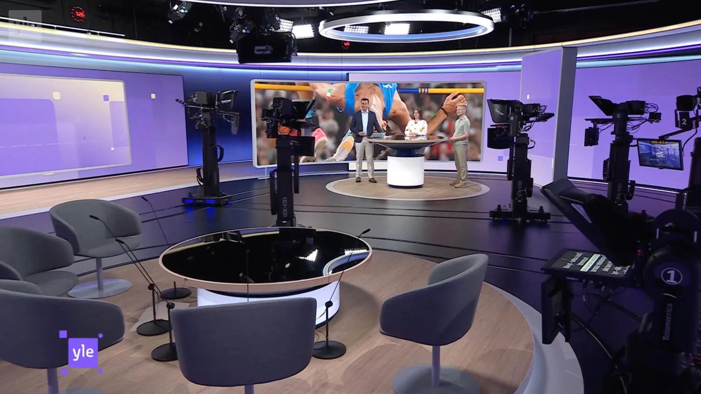
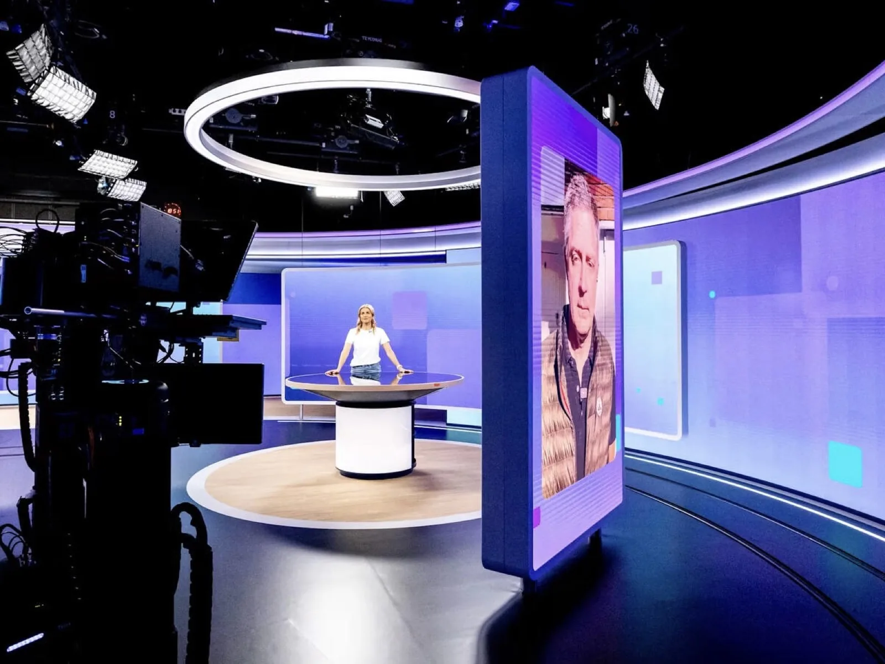
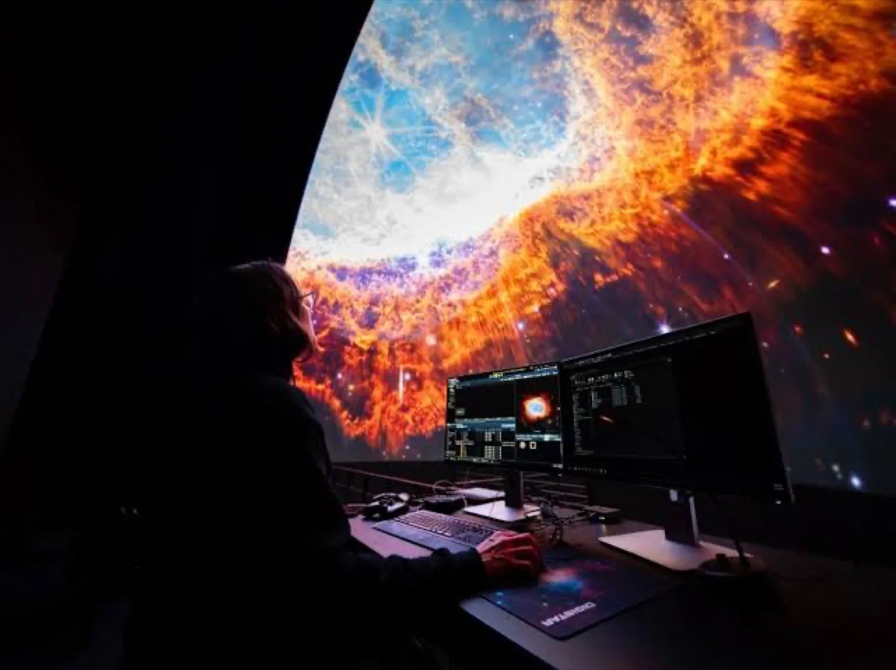

What is the SMPTE ST 2110 to LED processor signal path? It is the chain that carries programme video — and usually audio and ancillary data — from a studio or venue IP fabric built to the SMPTE ST 2110 suite, to the processor or sending system that drives an LED wall. The buying decision is not which controller brand to prefer. It is whether the wall is specified as a timed endpoint on that fabric, or as an SDI or HDMI island that someone else has to gateway at the last moment.
This guide is for broadcast engineers, systems integrators and rental companies writing a studio, gallery or camera-facing LED wall that must live with an ST 2110 plant. It is not a processor brand review, and it does not replace the LED video wall processor buying guide or the control-system guide to sending and receiving cards. Those pages cover how you choose and size a processor; this page covers only how that processor is expected to meet a 2110 network. For the studio wall as a camera surface, use the broadcast studio buying guide and the studio and virtual-production guide.
ST 2110 describes professional media on a managed IP network: video, audio and ancillary data travel as separate streams, with system timing defined around Precision Time Protocol (PTP). An LED processor, by contrast, is the device that maps a picture onto cabinets and receiving cards. Those two jobs often meet in a room, but they are not the same product category. If the RFQ only names a wall size, a pitch and “a processor,” the bidder is free to quote an HDMI or SDI input and leave the 2110 edge, the PTP domain and the failover to the house — or to discover, late, that a gateway, a timing island or a second processor is required.
Say, in writing, where the ST 2110 world ends and the LED world begins. A native ST 2110 input on the LED processor is one design. A dedicated gateway or conversion layer that hands SDI, HDMI or a proprietary link to the processor is another. Either can be correct; the specification should choose one, and it should say who supplies, times and supports that edge.
A useful path description is specific about the streams and the timing, without copying a vendor brochure into the bid:
This article does not invent a bitrate, a leaf-spine recipe, or a requirement that every LED processor must have a native ST 2110 port. Uncompressed 2110-20 at high resolution is a network-engineering problem; compressed 2110-22 is a different one. Put the plant format in the annex and ask the bidder to design to it, rather than asking them to guess.
Figure 1 shows a camera in the foreground of a broadcast studio, with a presenter, a vertical LED panel and curved walls behind. Those surfaces are endpoints of the signal path. The path is specified in the gallery and on the network, not only on the set drawing.

None of the Asia Vision pages used for studio, XR or rental camera work publish an ST 2110 input, a PTP profile, an NMOS statement, a gateway model, or a supported 2110 payload list. That is the starting point for the RFQ: the interface has to be requested and confirmed on the quotation for the proposed processor and the proposed plant. Do not infer a 2110-native input from a high refresh rate, from an XR description, or from the fact that a series is used in broadcast facilities.
What those pages do publish, and what is relevant to choosing a camera-facing wall rather than to certifying the IP edge, is the following. E-PRO is a high-end rental series specified for XR and virtual production, with SMD P1.953 / P2.6 / P3.91 and COB P2.6 / P3.91 / P4.81, a 250 × 250 mm module, 500 × 500 / 500 × 1000 mm cabinets, a plastic backshell indoors and die-cast aluminium outdoors. The page states that it is purpose-designed for XR film and video production and that refresh and camera compatibility take priority over peak brightness on a stage-lit volume. It does not publish a numeric refresh rate in the short specification table, and it does not publish an ST 2110 or processor-input specification.
RH-PRO COB is the flagship fine-pitch series for luxury corporate headquarters, premium broadcast studios and government command centres: P0.78 / P0.93 / P1.25 / P1.56, flip-chip COB, module 300 × 168.75 mm, refresh ≥7680 Hz, brightness 800–1200 cd/m², contrast ≥25000:1, viewing angle 178° H/V, DCI-P3 ≥99%, and dual power, dual receiver and dual signal. The dual-path wording is cabinet and receiving-card redundancy, not an ST 2110 hitless or dual-homed network statement. COB Z is a rental COB series (P1.95 / P2.6, optional virtual P0.97 / P1.3, flip chip, 250 × 250 mm module, 500 × 500 mm cabinet with ±5° arc and right-angle splicing, no backshell, refresh ≥7680 Hz, brightness 1200 cd/m², DC 4.2 V, max current 6 A). The page places it in events, stages and broadcast facilities. It does not publish a 2110 input or a processor interface. A high published refresh rate is a camera-scanning property of the wall, not evidence that the processor speaks ST 2110.
Figure 2 shows an operator at a desk with monitors in front of a large curved LED wall. The desk is where format, timing and the last hop to the wall are actually decided; those choices belong in the RFQ, not only in a set render.

There is no single correct edge. A native ST 2110 input on the LED processor can reduce boxes and keep the wall on the same PTP domain as the cameras, if the proposed processor actually offers that input for the plant’s payload and the supplier will support it. A gateway or conversion layer can be the right design where the preferred LED processor is SDI- or HDMI-native, where the house already standardises on a conversion product, or where the wall is a temporary hire that should not be a new endpoint type on the fabric.
What the specification must not do is leave the edge unnamed. If a gateway is used, state who supplies it, how it is timed, how it fails over, and whether its output format is inside the LED supplier’s scope. If a native input is required, state the suite parts, the essence and the PTP expectation, and ask for the exact processor model and firmware to be confirmed on the quotation. Do not treat a list of SDI or HDMI inputs in a generic processor brochure as a 2110 certificate.
A workable signal-path RFQ states the plant format and the edge, and it asks for evidence rather than a brand preference:
Attach the plant format (suite parts, video essence, audio and ancillary if the wall must carry them), the PTP domain or profile, any NMOS or house-control expectation, and whether the hire is a fixed studio or a touring or XR volume. Product pages publish a 3-year warranty and 18-day standard delivery; a particular processor, a gateway, a PTP integration test or a commissioning visit can take longer, and that time should sit in the programme rather than in the shipping promise.
For an XR or virtual-production wall that must also live with a studio IP plant, start with E-PRO. For a premium fixed broadcast or studio wall, start with RH-PRO COB. For a rental COB wall in a broadcast facility or on a stage, start with COB Z. Send the wall size, the plant format if you have it (or a statement that the wall will be an SDI or HDMI island), and whether you need a native 2110 edge or will provide a gateway. We will confirm the cabinet series and, on the quotation, any processor or interface options that can be offered. We will not invent an ST 2110 input, a PTP profile or a payload list that is not published on the product page. Start the enquiry through the contact form.
Specifying a studio or XR wall that must live with an ST 2110 plant? Send the wall size, the plant format if you have it, and whether you need a native IP edge or will provide a gateway, and we will reply with the cabinet data and any processor interface that can be confirmed. Start a project enquiry.